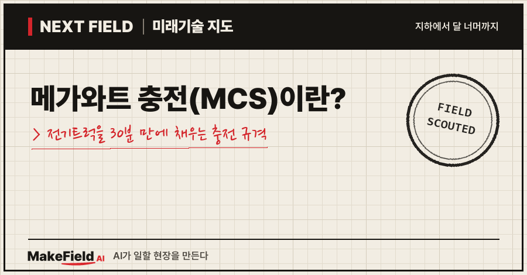
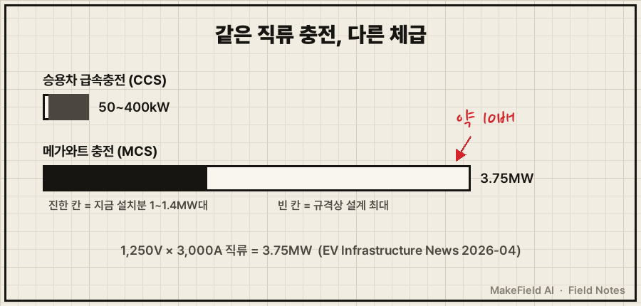
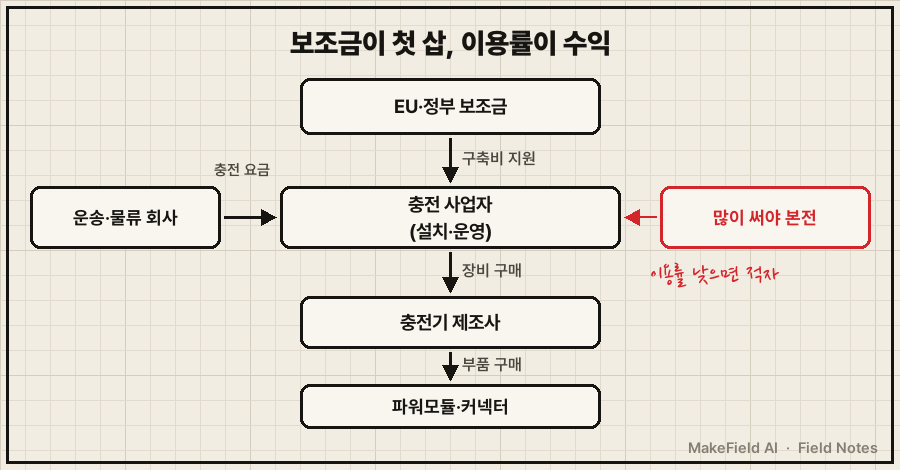
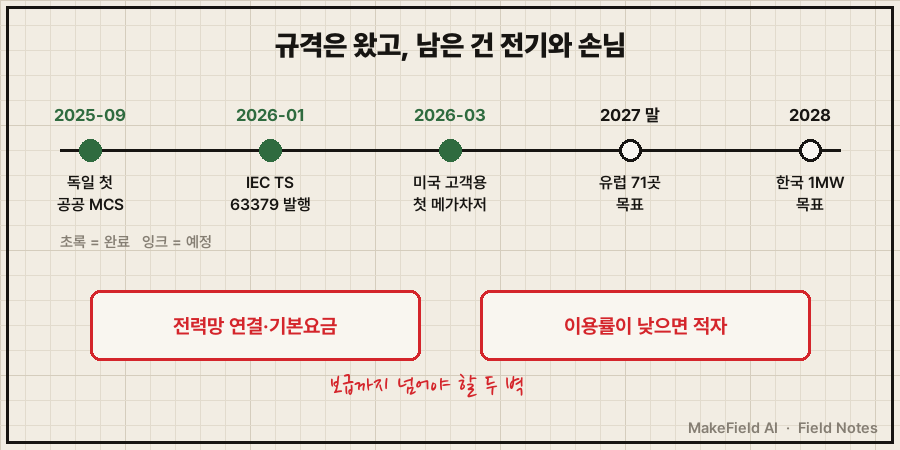

한 줄 요약: 메가와트 충전(MCS)은 대형 전기트럭용 충전 규격으로, 최대 3.75MW(1,250V·3,000A 직류)까지 설계됐고 국제 기술사양 IEC TS 63379가 2026년 1월 발행됐습니다(IEC 웹스토어 2026-01, EV Infrastructure News 2026-04). 승용차 급속충전의 수 배에 이르는 전기를 꽂아, 큰 배터리를 단 트럭도 운전기사 휴식 시간 안에 20%에서 80%까지 채우는 게 목표예요.
전기 승용차는 이미 흔하지만, 고속도로를 달리는 대형 화물트럭은 아직 거의 경유차입니다. 가장 큰 걸림돌은 "그 큰 배터리를 어디서, 얼마나 빨리 채우나"였어요. 2026년 10월 기준으로 이 문제를 풀려는 충전 규격이 무엇이고, 그 사이 돈이 어디로 흐르는지 쉽게 풀어볼게요.
1. 메가와트 충전(MCS)이란 무엇인가요
MCS(메가와트 충전 시스템)란 대형 트럭·버스를 위해 만든 초고출력 직류 충전 규격이다. 충전 커넥터·케이블·차량 쪽 충전구 모양부터 안전·발열 관리까지 정해 둔 '공통 플러그 규칙'이에요.
💡 MCS(Megawatt Charging System) — '메가와트급으로 충전하는 시스템'. 1메가와트(MW)는 1,000킬로와트(kW)다.
💡 직류(DC) — 한 방향으로만 흐르는 전기. 배터리는 직류로만 채울 수 있어서, 급속충전기는 직류로 바꿔서 바로 넣어 준다.
얼마나 센지는 승용차 급속충전(CCS)과 비교하면 잘 보여요.
💡 CCS — 지금 전기 승용차가 고속도로 급속충전에 주로 쓰는 규격.
| 구분 | 승용차 급속충전(CCS) | MCS |
|---|---|---|
| 주 사용 차량 | 승용차 | 대형 트럭·버스 |
| 출력 | 보통 50~400kW | 설계 최대 3.75MW(지금 설치분은 약 1~1.4MW대) |
| 전압·전류 | — | 최대 1,250V·3,000A(직류) |
| 국제 사양 | 기존 표준 | IEC TS 63379(2026-01 발행) |
(출처: EV Infrastructure News 2026-04, IEC 웹스토어 2026-01, Milence·Fraunhofer ISI 2025)

IEC 웹스토어에 따르면 이 사양은 직류 1,500V 이하, 3,000A 이하의 커넥터·케이블을 다루고, 업계 단체 CharIN이 2026년 2월 공식 발행을 알렸어요(IEC 웹스토어 2026-01, CharIN 2026-02). 다만 '기술 사양(TS)'은 정식 국제표준 직전 단계라는 점도 기억해 둘 만합니다.
💡 IEC TS — 국제전기기술위원회(IEC)가 내는 '기술 사양'. 정식 표준(IS)이 되기 직전의 공식 문서.
💡 CharIN — 전기차 충전 규격을 함께 만드는 자동차·충전기 업계 연합체.
2. 왜 지금 메가와트 충전이 필요해졌나요
대형 트럭은 배터리가 승용차보다 훨씬 커서, 기존 급속충전기로는 운전기사 휴식 시간 안에 다 채울 수 없기 때문이다. 유럽 화물차 기사는 4시간 반 운전하면 최소 45분을 쉬어야 해요(EU 집행위원회, 운전시간 규정 561/2006 요약). 이 45분 안에 충전을 끝내야 트럭이 경유차처럼 쉬지 않고 일할 수 있습니다.
트럭 제조사들이 내놓은 숫자가 바로 이 시간에 맞춰져 있어요. 다임러 트럭은 eActros 600이 MCS로 20%→80%를 약 30분, 볼보는 FH Aero Electric이 약 40분에 충전한다고 밝혔습니다(EV Infrastructure News 2026-04, 제조사 발표 인용). 독일 첫 공공 MCS 충전소 개통 때 프라운호퍼 연구소 측은 "대형 트럭을 30~45분 만에 수백 km 달릴 만큼 충전할 수 있게 됐다"고 설명했어요(Fraunhofer ISI 2025-09).
💡 SOC(충전 상태) — 배터리가 몇 % 차 있는지를 나타내는 값. 휴대폰 배터리 잔량 표시와 같다.
규제도 수요를 밀어 올립니다. EU 대체연료 인프라 규정(AFIR)은 2030년까지 핵심 도로망에 60km마다 총 3,600kW 이상의 트럭 충전소(350kW 이상 충전기 2기 포함)를 두도록 했어요(Transport Community AFIR 요약표, 2023-10).
💡 AFIR — EU가 고속도로·도시에 충전소를 의무로 깔게 한 규정. '주유소 간격'을 법으로 정한 셈.
3. 돈의 흐름 — 누가 사고, 누가 파나요
사는 쪽은 충전 사업자와 물류 회사, 파는 쪽은 충전기·부품 제조사이고, 초기 구축에는 정부 보조금이 크게 들어간다. 구조를 표로 정리했어요.
| 구분 | 누가(예시) | 무엇을 하나 |
|---|---|---|
| 돈을 대는 쪽(공공) | EU, 독일 연방 교통부 | 충전망 구축 보조금 |
| 사는 쪽(충전 사업자) | Milence, EnBW, 테슬라 | 고속도로·물류 거점에 충전소 설치·운영 |
| 쓰는 쪽(요금 지불) | 운송·물류 회사 | 충전 요금 지불 |
| 파는 쪽(장비) | ABB E-mobility, Kempower, Siemens 등 | MCS 충전기 제조 |
| 파는 쪽(부품) | 파워모듈·커넥터 업체 | 충전기 속 전력변환 모듈, 커넥터·케이블 |

규모를 숫자로 보면 이래요.
- EU 보조금: 트럭 충전 합작사 Milence는 EU 대체연료 인프라 지원 사업에서 최대 1억 1,154만 유로를 받아, 10개국 71곳에 MCS 충전 지점 284개와 CCS 264개를 2027년 말까지 짓기로 했어요(Milence 2025-02).
- 트럭 회사가 직접 충전 사업에: Milence의 주주는 다임러 트럭·트라톤 그룹·볼보 그룹이에요(Milence 2025-02). 트럭을 파는 회사들이 '충전소가 없어서 안 팔리는' 문제를 직접 풀러 나선 거죠.
- 독일 시범: 독일 HoLa 프로젝트는 연방 교통부 지원 1,200만 유로로 고속도로 4곳에 MCS를 깔고 있고, 첫 곳(A2 고속도로 립퍼란트 쥐트)은 ABB 장비·EnBW 운영으로 1.2MW급이에요(Fraunhofer ISI 2025-09).
- 장비 시장: 한 시장조사 보고서는 트럭용 MCS 장비 시장이 2025년 약 1억 7,510만 달러에서 2035년 약 28억 8,000만 달러로 연평균 29.6% 커질 것으로 봤어요(Global Market Insights 2026-09, 추정). 같은 보고서는 ABB E-mobility·Kempower·Siemens·Stäubli·Cavotec 5개사가 2025년 시장의 57.7%를 차지했다고 집계했습니다.
💡 연평균 성장률(CAGR) — 매년 평균 몇 %씩 커지는지 나타낸 값.
💡 파워모듈 — 전력망의 교류 전기를 배터리용 직류로 바꿔 주는 충전기 속 핵심 부품. 레고 블록처럼 여러 개를 묶어 출력을 키운다.
한국 기업은 주로 부품 쪽에서 보입니다. 솔루엠은 파워모듈을 넣어 공동 개발한 충전 플랫폼이 한 캐비닛에서 50kW부터 최대 1.6MW까지 늘릴 수 있고 MCS도 지원하며, 포르투갈에 첫 상용 출하를 했다고 밝혔어요(디지털데일리 2026-07).
※ 위 기업명은 산업 구조를 설명하기 위한 예시입니다. 특정 종목의 매수·매도를 권하는 글이 아닙니다.
4. 어디까지 깔렸나요 — 유럽·미국·한국
유럽은 보조금 기반 공공 충전망, 미국은 테슬라 중심의 자체 충전망, 한국은 2028년 1MW급 목표 단계다.
| 지역 | 현황 | 출처 |
|---|---|---|
| 독일 | 2025-09-29 첫 공공 MCS 충전소 개통(1.2MW) | Fraunhofer ISI 2025-09 |
| 유럽 10개국 | 71곳·MCS 284개 구축 중(2027년 말 목표) | Milence 2025-02 |
| 미국 | 테슬라, 2026-03 고객용 첫 메가차저 개통(초기 750kW 제한, 최대 1.2MW), 15개 주 66곳 계획 | Electrek 2026-03 |
| 한국 | 급속충전기를 지금의 350kW급에서 단계적으로 높여 2028년까지 1MW 이상으로 끌어올리는 계획 | 전자신문 2025-05 |
한국 계획에서 눈여겨볼 대목은 설비 구조예요. 환경부는 충전소 운영 효율을 위해 일체형 대신 '파워뱅크-디스펜서 분리 구조'로 개발하고, 한전 인입 비용과 기본요금 부담 때문에 부하를 나눠 쓰는 관리 기술이 필요하다고 봤습니다(전자신문 2025-05).
💡 파워뱅크-디스펜서 분리 — 전기를 만드는 큰 장치(파워뱅크)는 한 곳에 두고, 운전자가 잡는 충전 기둥(디스펜서)만 여러 개 세우는 방식. 주유소의 지하탱크와 주유기처럼.
💡 기본요금 — 실제로 쓴 양과 상관없이 '이만큼까지 쓸 수 있게 해 달라'고 계약한 용량에 매달 붙는 전기요금.
5. 언제 오나요, 그리고 한계
규격과 첫 충전소는 2026년에 갖춰졌지만, 대규모 보급은 전력망 연결과 이용률이라는 두 벽을 넘어야 한다. 낙관만 할 수 없는 근거도 같이 볼게요.
- 메가와트가 다가 아니다: 국제청정교통위원회(ICCT)는 2030년 EU 전기트럭에 22~28GW의 충전 용량이 필요하다고 보면서도, MCS급 충전기는 전체 충전 용량의 약 15%, 충전기 수로는 약 2%(4,000~5,300기)에 그칠 것으로 봤어요. 대부분은 밤사이 차고지 충전이고, 장거리 트럭의 공공 급속충전도 절반 이상은 350kW급으로 감당할 수 있다는 분석입니다(electrive 2025-10, ICCT 연구 요약).
- 규제만으로는 모자란다: 같은 분석에서 AFIR가 2030년 EU 공공 충전 수요의 50~70%만 채울 것으로 나왔어요(electrive 2025-10).
- 전기를 끌어오는 일: 한국 계획에서도 한전 인입 비용과 기본요금이 첫 과제로 꼽혔어요(전자신문 2025-05). 메가와트급 충전소 한 곳이 작은 공장만큼 전기를 당기기 때문입니다.
- 출력 제한 운영: 테슬라의 첫 고객용 메가차저도 하드웨어는 1.2MW까지 되지만 초기엔 750kW로 제한해 열었어요(Electrek 2026-03).
정리하면, '규격 확정 → 시범 충전소 → 고속도로 충전망' 순서에서 유럽은 세 번째 단계로 넘어가는 중이고, 한국은 첫 번째와 두 번째 사이에 있어요. 2027년 말 Milence 충전망 완공과 2028년 국내 1MW 목표가 다음 확인 지점입니다(추정).

자주 묻는 질문
Q. MCS 충전기로 승용차도 충전할 수 있나요?
MCS는 커넥터 모양부터 대형 차량용으로 따로 만든 규격이라, 승용차 충전구(CCS)와는 플러그가 달라요(IEC 웹스토어 2026-01). 그래서 Milence처럼 한 충전소에 MCS와 CCS를 함께 두는 곳이 많습니다(Milence 2025-02).
Q. 3.75MW 충전기가 실제로 있나요?
3.75MW는 규격이 허용하는 설계 최대치예요. 이 글에서 확인한 실제 설치 사례는 1.2MW(독일 립퍼란트, 테슬라 메가차저 하드웨어)와 1.44MW(Milence 앤트워프-브뤼헤 항)급입니다(Fraunhofer ISI 2025-09, Electrek 2026-03, EV Infrastructure News 2026-04).
Q. 한국에서는 언제 쓸 수 있나요?
환경부는 2028년까지 1MW 이상 충전기를 단계적으로 공급하겠다고 밝혔어요(전자신문 2025-05). 이번에 확인한 출처로는 국내 공공 MCS 충전소가 이미 개통됐는지는 확인되지 않았습니다.
오늘의 용어 정리
- MCS(메가와트 충전 시스템) — 대형 트럭·버스용 초고출력 직류 충전 규격
- MW(메가와트) — 1,000kW
- 직류(DC) — 한 방향으로 흐르는 전기, 배터리 충전에 쓰는 형태
- CCS — 전기 승용차 급속충전 규격
- IEC TS — 정식 국제표준 직전 단계의 기술 사양
- CharIN — 충전 규격을 만드는 업계 연합체
- SOC(충전 상태) — 배터리 잔량(%)
- AFIR — EU 충전소 의무 설치 규정
- CAGR — 연평균 성장률
- 파워모듈 — 교류를 직류로 바꾸는 충전기 속 부품
- 파워뱅크-디스펜서 분리 — 전력 장치는 한 곳, 충전 기둥은 여러 곳에 두는 구조
- 기본요금 — 계약 용량에 매달 붙는 전기요금
지난 Next Field에서는 AI 데이터센터에 전기를 넣는 길목(800V 직류 배선, 변압기 부족)을 다뤘는데, 이번엔 같은 '대전력 직류'가 도로 위 트럭으로 옮겨 가는 이야기였어요. 여러분은 대형 트럭 전동화의 진짜 병목이 충전기일까요, 전기를 끌어오는 전력망일까요?
출처
[1] IEC 웹스토어(2026-01) — IEC TS 63379 발행일(2026-01-28), 적용 범위(직류 1,500V·3,000A 이하 커넥터·케이블)
→ https://webstore.iec.ch/en/publication/67975
[2] CharIN(2026-02) — IEC TS 63379 공식 발행 발표
→ https://www.charin.global/news/iec-ts-63379-for-megawatt-charging-system-mcs/
[3] EV Infrastructure News(2026-04) — MCS 설계 최대 3.75MW·1,250V·3,000A, CCS 출력 비교, 제조사별 20→80% 충전 시간, 앤트워프-브뤼헤 1.44MW
→ https://www.evinfrastructurenews.com/ev-fleet-charging/megawatt-charging-for-trucks-the-complete-guide-to-mcs-charging-infrastructure-in-2026
[4] Milence(2025-02) — EU 보조금 1억 1,154만 유로, 10개국 71곳 MCS 284·CCS 264, 2027년 말 완료, 주주 구성
→ https://milence.com/newsroom/milence-was-selected-for-over-e111-million-in-eu-funding-to-accelerate-the-development-of-charging-infrastructure-and-create-europes-electric-corridors/
[5] Fraunhofer ISI(2025-09) — 독일 첫 공공 MCS 충전소 개통(1.2MW), HoLa 1,200만 유로·4곳, 30~45분 충전 발언
→ https://www.isi.fraunhofer.de/en/presse/2025/presseinfo-16-megawattladen-hochleistungsladepunkt-e-lkw.html
[6] electrive(2025-10) — ICCT 연구 요약: 2030년 22~28GW, MCS급 충전기 4,000~5,300기(용량 15%·수량 2%), 350kW로 절반 이상 감당, AFIR 수요 충족률 50~70%
→ https://www.electrive.com/2025/10/09/icct-study-shows-5300-mcs-chargers-in-the-eu-sufficient-for-electric-trucks
[7] Transport Community AFIR 요약표(2023-10) — 2030년 핵심망 60km마다 트럭 충전소 3,600kW(350kW 2기)
→ https://www.transport-community.org/wp-content/uploads/2023/10/TABLE-AFIR-EN-version.pdf
[8] EU 집행위원회(운전시간·휴식 규정 안내) — 4시간 반 운전 후 최소 45분 휴식
→ https://transport.ec.europa.eu/transport-modes/road/social-provisions/driving-time-and-rest-periods_en
[9] Electrek(2026-03) — 테슬라 첫 고객용 메가차저 개통, 초기 750kW 제한·최대 1.2MW, 15개 주 66곳 계획
→ https://electrek.co/2026/03/08/tesla-opens-first-megacharger-ontario-california-semi-customers/
[10] 전자신문(2025-05) — 환경부 급속충전기 350kW급→2028년 1MW 이상 단계적 상향 계획, 파워뱅크-디스펜서 분리 구조, 한전 인입비·기본요금 과제
→ https://www.etnews.com/20250509000200
[11] 디지털데일리(2026-07) — 솔루엠 파워모듈 적용 충전 플랫폼, 50kW~1.6MW 확장·MCS 지원, 포르투갈 첫 출하
→ https://www.ddaily.co.kr/page/view/2026072110220126760
[12] Global Market Insights(2026-09) — 트럭용 MCS 시장 2025년 1억 7,510만 달러→2035년 28억 8,000만 달러(연 29.6%, 추정), 상위 5개사 점유율 57.7%
→ https://www.gminsights.com/industry-analysis/truck-megawatt-charging-system-market